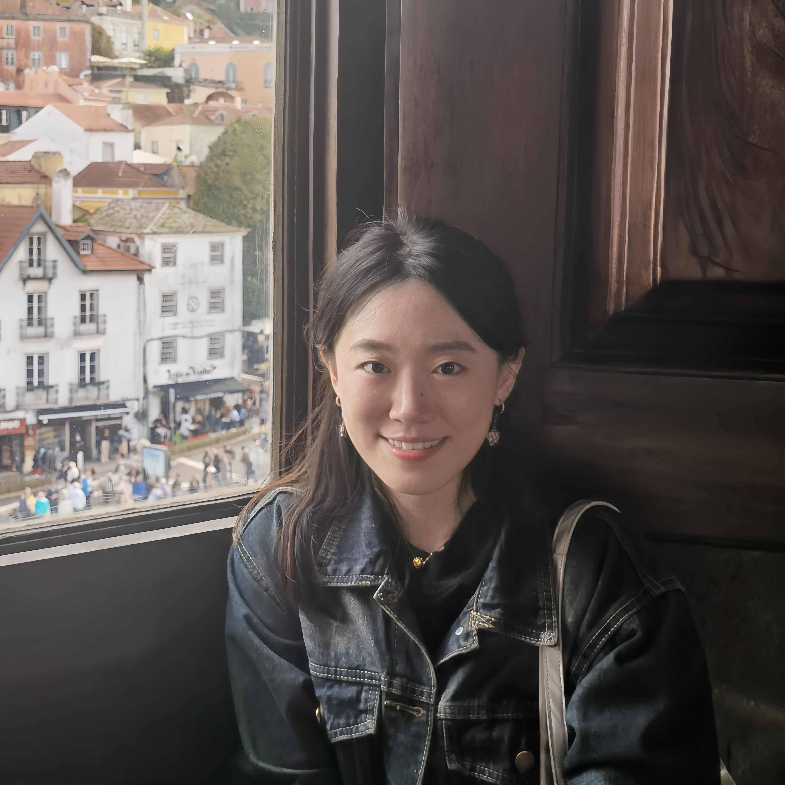

|  | Programming Languages Laboratory School of Computer Science Peking University
|
|---|
|
I am now a fourth-year Ph.D student at Peking University advised by Prof Zhenjiang Hu.
I am interested in bidirectional live programming, which not only allows software developers to see continuous changes in the output instantly as they write the program, but also enables them to directly manipulate the output and automatically reflect the changes back to the source program, so that the updated program can produce the manipulated output.
I completed my undergraduate at Nankai University.
|
| Research |
| My main interest is in programming languages, and bidirectional live programming in particular. Publications [Google Scholar]
|
| Honors and Awards |
| Teaching Experience |
| Contact Information |
|
Office: Room 1434, Science Building #1, Peking University Email: zhangstar at stu.pku.edu.cn
|